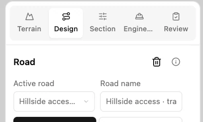
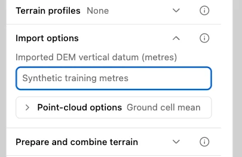
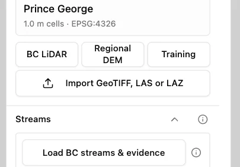
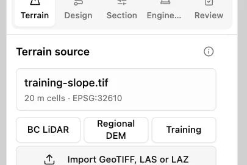

Load a terrain surface
Use the training project in Engineering workbench and download the sample below. It contains a synthetic slope with elevations in metres. Loading it changes the ground used to calculate the project’s profiles and sections.
1. Open the terrain controls
Choose Terrain in the left-hand workflow tabs. Terrain source identifies the ground currently in use.

2. Identify the elevation reference
Expand Import options. For this sample, enter Synthetic training metres in Imported DEM vertical datum (metres). For your own data, use the vertical reference supplied with the file.

3. Load the sample surface
Under Terrain source, select Import GeoTIFF, LAS or LAZ and choose training-slope.tif. Wait for the import to finish.

4. Verify the loaded terrain
Terrain source now reads training-slope.tif, with 20 m cells and EPSG:32610. Check those details before reading elevations from the new surface.
